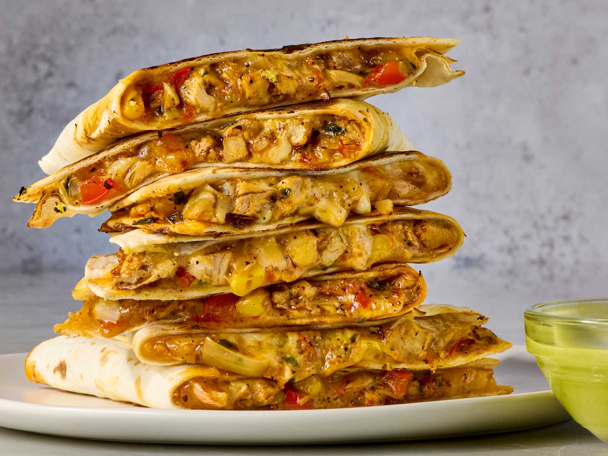

Quesadillas are a beloved Mexican dish that have gained popularity worldwide for their rich flavors, textures, and versatility. This recipe is a testament to the simplicity and elegance of this classic dish, offering a perfect blend of melted cheese, savory fillings, and crispy tortillas. Chefs Resource Traditionally, quesadillas are made with corn tortillas and Oaxaca cheese, cooked on a comal until the cheese melts. However, variations abound, with flour tortillas and a variety of fillings like chicken, mushrooms, or squash blossoms being popular choices. Whether you're seeking a quick snack or a satisfying meal, quesadillas offer endless customization options to suit your taste. From classic cheese to inventive combinations, there's a quesadilla for every palate. Ready to create your perfect quesadilla? Explore our step-by-step guide and discover tips for achieving that ideal crispy exterior and gooey, flavorful interior.
